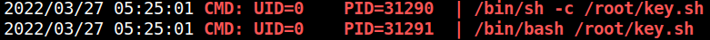

5.4 pspy2 – Unprivileged Linux Process Snooping
“pspy” is a command line tool designed to snoop on processes without need for root permissions. It allows you to see commands run by other users, cron jobs, etc. as they execute. Great for enumeration of Linux systems in CTFs. Also great to demonstrate your colleagues why passing secrets as arguments on the command line is a bad idea. More info here.
1. Download “pspy32” from here .
2. Upload the file from the Kali Machine to “/tmp”.
Password:
59583hello$scp pspy32 gill@192.168.12.45:/tmp
3. Go to SSH connection shell.
4. Change “pspy32” privileges.
chmod +x pspy32
5. Run the script.
./pspy32
Output:

After executing the script, we found a python script “key.sh” which could be on cronjob with root privileges which we can exploit for privilege escalation.